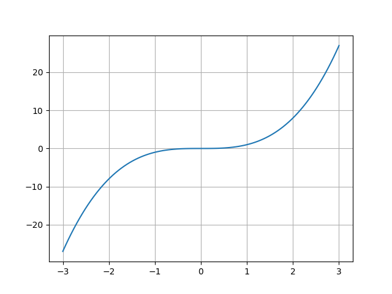

Otomatik türevin nasıl işlediğini [1] yazısında gördük. Programlama dilinde
yazılmış, içinde if, case, hatta döngüler bile içerebilen
herhangi bir kod parçasının türevini alabilmemizi sağlayan otomatik türev
almak pek çok alanda işimize yarar. Optimizasyon alanı bunların başında
geliyor. Düşünürsek, eğer sembolik olarak türev alması çok çetrefil bir
durum varsa, tasaya gerek yok; bir fonksiyonu kodlayabildiğimiz anda onun
türevini de alabiliriz demektir.
Önce bazı genel optimizasyon konularını işleyelim.
Sınırlanmamış optimizasyonda (unconstrained optimization) $f(x)$ fonksiyonunu minimum değerde tutacak $x$ değerini bulmaya uğraşıyoruz, ki $x$ tek boyutlu skalar, ya da çok boyutlu $x \in \mathbb{R}^n$ olabilir. Yani yapmaya uğraştığımız
$$ \min_x f(x) $$
işlemi. Peki minimumu nasıl tanımlarız? Bir nokta $x^*$ global minimize edicidir eğer tüm $x$'ler için $f(x^*) \le f(x)$ ise, ki $x \in \mathbb{R}^n$, en azından $x$ modelleyeni ilgilendiren tüm küme öğeleri için.
Fakat çoğu zaman bir global $f$'i kullanmak mümkün olmayabilir, fonksiyon çok çetrefil, çok boyutlu, bilinmez durumdadır, ve elimizde sadece yerel bilgi vardır. Bu durumda üstteki tanımı "bir $N$ bölgesi içinde" olacak şekilde değiştiririz ki bölge, $x^*$ etrafındaki, yakınındaki bölgedir.
Üstteki tanımı okuyunca $x^*$'in yerel minimum olup olmadığını anlamanın tek yolunun yakındaki diğer tüm noktalara teker teker bakmak olduğu anlamı çıkabilir, fakat eğer $f$ pürüzsüz bir fonksiyon ise yerel minimumu doğrulamanın çok daha hızlı bir yöntemi vardır. Hatta ve hatta eğer fonksiyon $f$ iki kez türevi alınabilir haldeyse $x^*$'in yerel minimum olduğunu ispatlamak daha kolaylaşır, $\nabla f(x^*)$ ve Hessian $\nabla^2 f(x^*)$'e bakarak bunu yapabiliriz.
Minimallik için 1. ve 2. derece şartlar var. 1. derece gerekli şart (ama yeterli değil) $\nabla f = 0$ olması. Bu standard Calculus'tan bildiğimiz bir şey, minimum ya da maksimumda birinci türev sıfırdır. Ama türevin sıfır olup minimum ya da maksimum olmadığı durum da olabilir, mesela $f(x) = x^3$. $f'(0) = 0$'dir fakat $x=0$ ne maksimum ne de minimumdur. Daha iyi bir termioloji $\nabla f = 0$ noktalarını {\em kritik nokta} olarak tanımlamaktır. $x=0$ noktasında bir değişim oluyor, bu değişim kritik bir değişim, her ne kadar minimum ya da maksimum olmasa da.
x = np.linspace(-3,3,100)
plt.plot(x,x**3)
plt.grid(True)
plt.savefig('func_40_autograd_01.png')

Bir kritik noktanın yerel maksimum ya da yerel minimum olup olmadığını anlamak için fonksiyonun ikinci türevine bakabiliriz. Bir $f: \mathbb{R}^n \to \mathbb{R}$ var ve $x^*$ noktasının kritik nokta olduğunu düşünelim, yani $\nabla f(x^*) = 0$. Şimdi çok ufak bir $h$ adımı için $f(x^* + h)$'a ne olduğuna bakalım. Burada Taylor açılımı kullanabiliriz [2],
$$ f(x + h^*) = f(x^*) + \nabla f(x^*) h + \frac{1}{2} h^T f(x^*) \nabla^2 (x^*) f(x^*) h + O(3) $$
$\nabla^2 (x^*)$ bir matristır içinde $f$'nin ikinci derece türevleri vardır [6]. Şimdi, kritik noktada olduğumuz için $\nabla f(x^*) = 0$, ve $O(3)$ terimlerini iptal edersek, üstteki
$$ f(x^* + h^*) - f(x^*) = \frac{1}{2} h^T \nabla^2 (x^*) h + O(3) $$
haline gelir. Simdi "bir noktanın mesela yerel maksimum olması" sözünü $f(x^* + h^*) - f(x^*) < 0$ ile ifade edebiliriz, çünkü $x^*$ etrafındaki tüm $x$'lerin $f$'in daha az değerlerinden olma şartını aramış oluyoruz (adım atılıyor, çıkartma yapılıyor, sonuç sıfırdan küçük). Tabii bu "tüm" söylemi yaklaşıksal, o sebeple minimumluk ifadesi yerel.
Devam edersek $f(x^* + h^*) - f(x^*) < 0$ olması şartı aynı zamanda $\frac{1}{2} h^T \nabla^2 (x^*) h < 0$ anlamına gelir, bu da $\nabla^2 (x^*)$ negatif kesin demektir. Çünkü $A$ simetrik bir matris olduğu zaman
$x^TAx < 0$ ise matris negatif kesin
$x^TAx \le 0$ ise matris negatif yarı-kesin (negatif semi-definite)
$x^TAx > 0$ ise matris pozitif kesin
$x^TAx \ge 0$ ise matris pozitif yarı-kesin (positive semi-definite)
[devam edecek]
Kaynaklar
[1] Bayramlı, Ders Notları, Otomatik Türev Almak (Automatic Differentiation -AD-)
[2] Schrimpf, http://faculty.arts.ubc.ca/pschrimpf/526/526.html
[3] https://nikstoyanov.me/post/2019-04-14-numerical-optimizations
[4] https://rlhick.people.wm.edu/posts/mle-autograd.html
[6] Bayramli, Cok Boyutlu Calculus, Vektör Calculus, Kurallar, Matris Türevleri